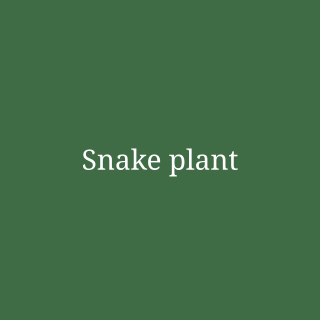

Houseplants for complete beginners
This guide is written for complete beginners who have never kept a plant alive.
Choosing your first plant
Our 2020 Plant of the Year is the snake plant, and it is this year's top pick for new plant owners.

Preparing the soil
Ensure substrate aeration via perlite amendment to optimise rhizosphere oxygenation, and calibrate the substrate's cation exchange capacity relative to your cultivar's edaphic requirements.
Potting your plant
first you get a pot that is a bit bigger than the plant and then you put some soil in the bottom and then you take the plant out of its old pot and loosen the roots a little and then you put it in the new pot and fill around it with soil and then you press it down gently and then you water it and put it somewhere bright but not in direct sun.
Drainage
Good drainage matters more than most people think. Always choose a pot with a hole in the bottom, empty the saucer about thirty minutes after watering, and never let roots sit in standing water, because soggy soil is the most common cause of root rot in indoor plants.
Watering
Water your snake plant every two to three weeks, letting the soil dry out completely between waterings.
Managing your account
Open your account page, choose Plans, then choose Cancel plan.